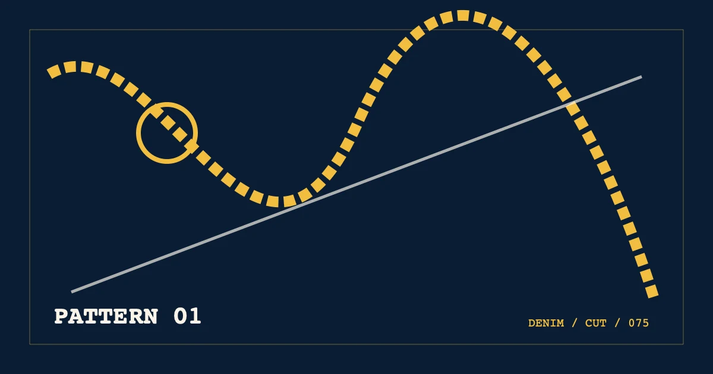

%%A1_EYEBROW%%
%%A1_TITLE%%
%%A1_SUMMARY%%- 编写
- %%AUTHOR_NAME%%
- 发布
- 复核

展开版型目录
%%A1_SECTION_LABEL_1%%%%A1_COMPONENT_TITLE%%%%A1_COMPONENT_NOTE%% %%A1_SWATCH_LABEL_1%% %%A1_SWATCH_LABEL_2%% %%A1_SWATCH_LABEL_3%% %%A1_SWATCH_LABEL_4%%
%%A1_H2_1%%
%%A1_BODY_1_A%%
%%A1_SWATCH_TITLE_1%%
%%A1_SWATCH_TEXT_1%%
%%A1_SWATCH_TITLE_2%%
%%A1_SWATCH_TEXT_2%%
%%A1_SWATCH_TITLE_3%%
%%A1_SWATCH_TEXT_3%%
%%A1_SWATCH_TITLE_4%%
%%A1_SWATCH_TEXT_4%%
%%A1_BODY_1_B%%
%%A1_SECTION_LABEL_2%%
%%A1_H2_2%%
%%A1_BODY_2_A%%
%%A1_BODY_2_B%%
%%A1_SECTION_LABEL_3%%
%%A1_H2_3%%
%%A1_BODY_3_A%%
%%A1_BODY_3_B%%
%%A1_SECTION_LABEL_4%%
%%A1_H2_4%%
%%A1_BODY_4_A%%
%%A1_BODY_4_B%%
%%A1_FAQ_TITLE%%
%%A1_FAQ_Q_1%%
%%A1_FAQ_A_1%%
%%A1_FAQ_Q_2%%
%%A1_FAQ_A_2%%